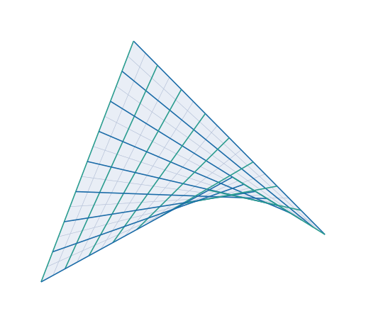
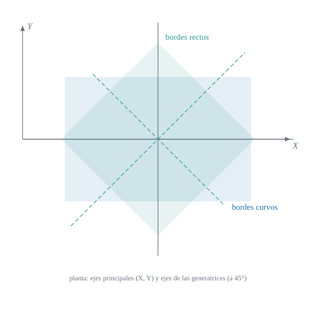

Superficie reglada de bordes rectos y de bordes curvos
NotaObjetivos de aprendizaje
Al terminar el capítulo sabrás:
describir el paraboloide hiperbólico como superficie explícita y como superficie reglada;
obtener todos sus tensores geométricos (\(a_{\alpha\beta}\), \(\hat{\mathbf{a}}_3\), \(b_{\alpha\beta}\), \(\bar\Gamma^\gamma_{\alpha\beta}\), \(K\)) en forma cerrada y contrastarlos numéricamente;
explicar por qué las curvas coordenadas no son líneas de curvatura en un punto cualquiera;
distinguir las tipologías de bordes curvos y de bordes rectos y relacionarlas por un giro de \(45^\circ\) en planta;
justificar cuándo una lámina de este tipo puede considerarse «muy plana» (shallow).
9.1 Motivación
El paraboloide hiperbólico («hypar») es una superficie de doble curvatura negativa (\(K<0\)) que puede construirse con elementos rectos. Esa combinación de rigidez geométrica y facilidad de encofrado lo ha convertido en una forma frecuente de cubiertas de hormigón de espesor muy pequeño. Para el análisis estructural tiene una dificultad: sus curvas coordenadas naturales no son ortogonales (Sección 9.3.1), de modo que no sirven las teorías de láminas que suponen coordenadas ortogonales.
ImportanteIdea clave
Lo que se ha aprendido en los capítulos 6 a 8 se aplica aquí sin hipótesis adicionales: \(a_{\alpha\beta}\) es no diagonal, y por eso el formalismo tensorial completo (bases covariante y recíproca distintas, símbolos de Christoffel no nulos) es necesario.
9.2 Descripción geométrica
9.2.1 Forma explícita (bordes curvos)
Definición 9.1 (Paraboloide hiperbólico en ejes principales) Con ejes cartesianos \((x,y,z)\), la superficie media es \[
z=-\frac12\left(\frac{x^2}{R_x}+\frac{y^2}{R_y}\right),\qquad R_xR_y<0,
\tag{9.1}\] y su proyección en planta es un rectángulo \([-a/2,a/2]\times[-b/2,b/2]\). Los bordes son parábolas en los planos \(x=\pm a/2\) e \(y=\pm b/2\).
Se parametriza por \((\theta^1,\theta^2)=(x,y)\). Las secciones por planos \(y=\text{cte}\) son parábolas que se curvan hacia abajo si \(R_x>0\), y las de \(x=\text{cte}\) hacia arriba si \(R_y<0\).
Las curvas \(\theta^1=\text{cte}\) y \(\theta^2=\text{cte}\) son rectas (Figura 9.1): fijado \(\theta^1=u\), \(\theta^2\mapsto(u,\theta^2,c\,u\,\theta^2)\) es lineal. Por tanto el paraboloide hiperbólico contiene dos familias de generatrices rectas, y por eso se llama superficie doblemente reglada.

Figura 9.1: Paraboloide hiperbólico \(z=c\,x\,y\) (\(c=0{,}8\)) con sus dos familias de generatrices rectas: \(\theta^1=\text{cte}\) (azul) y \(\theta^2=\text{cte}\) (verde). Cada punto es la intersección de una recta de cada familia.
Proposición 9.1 (Las dos formas son la misma superficie) Con \(R_x=R\), \(R_y=-R\) y el giro de \(45^\circ\) en planta \(x=(X-Y)/\sqrt2\), \(y=(X+Y)/\sqrt2\), la ecuación Ecuación 9.1 equivale a Ecuación 9.2 con \(c=-1/R\).
Con \(R_x=R,R_y=-R\): \(z=-\tfrac{1}{2R}(X^2-Y^2)\). Con \(X=(x+y)/\sqrt2\), \(Y=(y-x)/\sqrt2\) (el giro inverso), \(X^2-Y^2=2xy\), luego \(z=-xy/R=c\,xy\) con \(c=-1/R\). \(\blacksquare\)
Así, la misma superficie admite dos tipologías de lámina según cómo se recorte en planta (Figura 9.2):
bordes curvos: el rectángulo en planta tiene lados paralelos a los ejes principales (las secciones con los planos verticales de los bordes son parábolas);
bordes rectos: el rectángulo tiene lados paralelos a las generatrices, es decir, a \(45^\circ\) de los ejes principales (los bordes son segmentos rectos).

Figura 9.2: Vista en planta. Los ejes principales \((X,Y)\) son los de curvatura extrema; las generatrices rectas están a \(45^\circ\) (verde discontinuo). Un rectángulo con lados paralelos a los ejes principales da la lámina de bordes curvos (azul); uno con lados paralelos a las generatrices, la de bordes rectos (verde). Ambos recortan la misma superficie.
9.3 Tensores geométricos del paraboloide de bordes curvos
Con \({}_0\mathbf{r}=(\theta^1,\theta^2,-\tfrac12(\theta^{1\,2}/R_x+\theta^{2\,2}/R_y))\) y \(w^2\equiv a\) (Ecuación 6.9), se obtienen, como se ha calculado en los capítulos 6 y 7:
\(\dfrac{R_x^2(R_y^2+\theta_2^2)}{D},\ \dfrac{R_y^2(R_x^2+\theta_1^2)}{D},\ -\dfrac{R_xR_y\theta_1\theta_2}{D}\) con \(D=R_y^2\theta_1^2+R_x^2(R_y^2+\theta_2^2)=R_x^2R_y^2\,a\)
La expresión de \(\bar\Gamma^2_{22}\) se ha deducido por simetría con la de \(\bar\Gamma^1_{11}\); se verifica junto con las demás en el test «Superficies: paraboloide hiperbólico de bordes curvos». El resto coincide con las que se obtienen a mano con Ecuación 7.3.
9.3.1 Las curvas coordenadas no son líneas de curvatura
AdvertenciaCurvas coordenadas y direcciones principales
Como \(a_{12}=\theta^1\theta^2/(R_xR_y)\neq0\) salvo sobre los ejes, las curvas coordenadas no son ortogonales. Además, \(b_{12}=0\) pero \(a_{12}\neq0\), así que las direcciones coordenadas no son principales (para serlo, \(b_{12}-\kappa a_{12}=0\) con el mismo \(\kappa\) en ambas). Solo en el origen y sobre los ejes coinciden las direcciones coordenadas con las principales. Esta es la dificultad que impide usar teorías de láminas con coordenadas ortogonales.
Como \(b_{11}=b_{22}=0\), la curvatura normal en las direcciones coordenadas es nula: las rectas generatrices son líneas asintóticas (\(\kappa=0\)), como era de esperar. En el origen, \(a_{\alpha\beta}=\delta_{\alpha\beta}\), \(b_{12}=c\) y las curvaturas principales son \(\pm c\) en las direcciones a \(\pm45^\circ\).
9.5 Láminas muy planas
Se dice que una lámina de este tipo es muy plana (shallow) si la pendiente de la superficie es pequeña, \(|\partial z/\partial x|,|\partial z/\partial y|\ll1\). En un paraboloide con planta \(a\times b\) y radios \(R_x,R_y\), las pendientes máximas son \(a/(2|R_x|)\) y \(b/(2|R_y|)\). Entonces \(a_{\alpha\beta}\approx\delta_{\alpha\beta}\), \(\hat{\mathbf{a}}_3\approx\mathbf{e}_z\) y \(b_{\alpha\beta}\approx\operatorname{diag}(-1/R_x,-1/R_y)\) son aproximadamente constantes. La Tabla 9.1 cuantifica la desviación de la métrica.
Tabla 9.1: Desviación máxima de la métrica respecto de la identidad en el paraboloide \(R_x=-R_y=R\), planta cuadrada de lado \(a\) (esquina \(\theta=(a/2, a/2)\)).
usingGeometria, LinearAlgebra, Printfa_lado =1.0println("| \$R/a\$ | pendiente máxima \$a/2R\$ | desviación máx. de \$a_{\\alpha\\beta}\$ | \$(a/2R)^2\$ |")println("|---:|---:|---:|---:|")for ratio in (2.0, 5.0, 10.0, 20.0, 50.0) R = ratio * a_lado r =paraboloide_curvo(R, -R) A =base_superficie(r, [a_lado /2, a_lado /2]) dev =maximum(abs.(metrica(A) -I(2))) pend = a_lado / (2R)@printf("| %g | %.4f | %.6f | %.6f |\n", ratio, pend, dev, pend^2)end
\(R/a\)
pendiente máxima \(a/2R\)
desviación máx. de \(a_{\alpha\beta}\)
\((a/2R)^2\)
2
0.2500
0.062500
0.062500
5
0.1000
0.010000
0.010000
10
0.0500
0.002500
0.002500
20
0.0250
0.000625
0.000625
50
0.0100
0.000100
0.000100
La desviación es del orden de la pendiente al cuadrado, \((a/2R)^2\). Para \(R/a\ge10\) la métrica se desvía menos de un \(0{,}3\,\%\) de la euclídea.
# Direcciones principales en el punto: ¿coinciden con las coordenadas?pc =curvaturas_principales(a, b)(κ = pc.κ, λ1= pc.λ[:, 1], λ2= pc.λ[:, 2], a12 = a[1, 2])
# Giro de 45°: misma altura z en ambas descripciones (R_x = −R_y = R, c = −1/R)R =2.5cur =paraboloide_curvo(R, -R); rect =paraboloide_recto(-1/ R)X = [0.4, 0.9]xy = [(X[1] - X[2]) /sqrt(2), (X[1] + X[2]) /sqrt(2)](cur(X)[3], rect(xy)[3])
(0.13, 0.13)
9.7 Ejercicios
Demuestra que la recta \(\theta^1=u\) de Ecuación 9.2 está contenida en la superficie y que, dado un punto, hay exactamente dos generatrices que pasan por él.
Comprueba Ecuación 9.3 con Geometria para \(c=1\) en tres puntos distintos.
Calcula las direcciones principales de \(z=c\,x\,y\) en un punto \((\theta^1,\theta^2)\) cualquiera y comprueba que solo en el origen forman \(45^\circ\) con los ejes.
Para \(R_x=-R_y=R\), ¿para qué valores de \(a/R\) la pendiente máxima en el borde del rectángulo de planta \(a\times a\) supera \(0{,}25\)?
Dibuja, para \(c=0{,}5\), las curvas de nivel \(z=\text{cte}\) y las generatrices proyectadas en planta; ¿qué forma tienen?
9.8 Referencias comentadas
Aún no se han leído en detalle para este libro; los comentarios reflejan su título y su lugar en la bibliografía del tema.
Canals (1976) — estudio monográfico de los cascarones parabólico-hiperbólicos: geometría, hypar como superficie reglada, de traslación y cuádrica.
Margarit y Buxadé (s. f.) — cálculo de estructuras con forma de paraboloide hiperbólico.
Narita y Leissa (1984) — vibraciones de láminas muy planas de planta rectangular apoyadas en las esquinas; referencia del esquema geométrico (\(R_x\), \(R_y\)) usado para el hypar de bordes curvos.
Novozhilov (1959) — teoría de láminas delgadas; fundamento de la hipótesis de lámina muy plana.
Carmo (1994) — superficies regladas y curvatura de Gauss negativa.
Canals, I. 1976. Cascarones Parabólicos-Hiperbólicos. Editorial Limusa, s.a.
Carmo, M. do. 1994. Geometría diferencial de curvas y superficies. Alianza Universidad.
Margarit, J., y C. Buxadé. s. f. Cálculo de Estructuras en Paraboloide Hiperbólico. Editorial Blume.
Narita, Y., y A. W. Leissa. 1984. «Vibrations of Corner Point Supported Shallow Shells of Rectangular Planform». Earthquake Engineering and Structural Dynamics 12: 651-61.
Novozhilov, V. V. 1959. The Theory of Thin Shells. P. Noordhoff ltd.